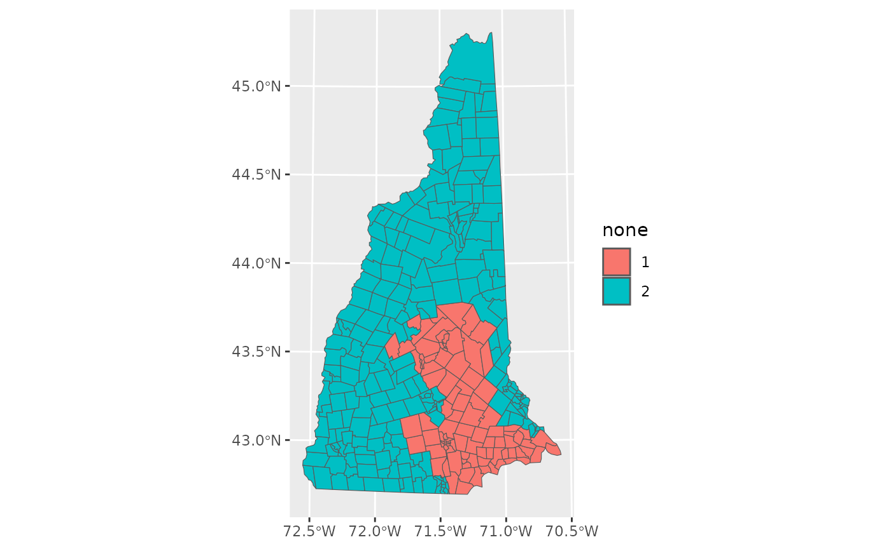

There are dozens of measures of compactness. This vignette introduces some of the most common and most important measures of compactness. See the vignette “Using redistmetrics” for the bare-bones of the package.
We first load the redistmetrics package and data from New Hampshire. For any function, the shp argument can be swapped out for your data and the plans argument can be swapped out for your redistricting plans (be it a single plan, a matrix of plans, or a redist_plans object).
library(redistmetrics)
data(nh)The New Hampshire proposed Republican plan looks like:

Area-Based Compactness
Polsby-Popper Compactness
Polsby-Popper is proportional to the ratio of a districts area (\(A_D\)) and its perimeter (\(P_D\)). Formally, it can be written as:
\[ \textrm{Polsby-Popper} = 4\pi\frac{A_D}{P_D}\] Scores range from 0 to 1, where 0 is the least compact and 1 is the most compact.
Polsby-Popper compactness can be computed with:
comp_polsby(plans = nh$r_2020, shp = nh)
#> [1] 0.2324375 0.1582763Schwartzberg Compactness
Schwartzberg Compactness is similar to Polsby-Popper compactness and is also based on the comparison of a district’s perimeter (\(P_D\)) to its area (\(A_D\)). Formally, it can be written as:
\[ \textrm{Schwartzberg} = \frac{1}{\frac{P_D}{2\pi\sqrt{A_D/\pi}}}\]
Scores range from 0 to 1, where 0 is the least compact and 1 is the most compact.
Schwartzberg compactness can be computed with:
comp_schwartz(plans = nh$r_2020, shp = nh)
#> [1] 0.4821177 0.3978395Reock Compactness
Reock compactness compares the area of the district (\(A_D\)) to the area of the minimum bounding circle (\(A_{MBC}\)).
Formally, it can be written as:
\[ \textrm{Reock} = \frac{A_D}{A_{MBC}} \] Scores range from 0 to 1, where 0 is the least compact and 1 is the most compact.
Reock compactness can be computed with:
comp_reock(plans = nh$r_2020, shp = nh)
#> [1] 0.4444653 0.2502152Box Reock Compactness
Box Reock compactness compares the area of the district (\(A_D\)) to the area of the minimum bounding rectangle (\(A_{MBR}\)).
Formally, it can be written as:
\[ \textrm{Box Reock} = \frac{A_D}{A_{MBR}} \]
Scores range from 0 to 1, where 0 is the least compact and 1 is the most compact.
Box Reock compactness can be computed with:
comp_box_reock(plans = nh$r_2020, shp = nh)
#> [1] 0.5769441 0.4196260Convex Hull Compactness
Convex Hull compactness compares the area of the district (\(A_D\)) to the area of the convex hull (\(A_{CV}\)).
Formally, it can be written as:
\[ \textrm{Convex Hull} = \frac{A_D}{A_{CV}} \] Scores range from 0 to 1, where 0 is the least compact and 1 is the most compact.
Convex Hull compactness can be computed with:
comp_ch(plans = nh$r_2020, shp = nh)
#> [1] 0.6763964 0.6626738Skew Compactness
Skew compactness compares the area of the maximum inscribed circle (\(A_{MIC}\)) to the area of the minimum bounding circle (\(A_{MBC}\)).
Formally, it can be written as:
\[ \textrm{Skew} = \frac{A_{MIC}}{A_{MBC}} \] Scores range from 0 to 1, where 0 is the least compact and 1 is the most compact.
Skew compactness can be computed with:
comp_skew(plans = nh$r_2020, shp = nh)
#> [1] 0.3640221 0.2481286X-Symmetry Compactness
X-Symmetry compactness compares the area of the intersection of a district reflected over its x-axis (\(A(I(D, D^{X}))\)) to the area of the district (\(A_D\)).
Formally, it can be written as:
\[ \textrm{X-Symmetry} = \frac{A(I(D, D^{X}))}{A_D} \] Scores range from 0 to 1, where 0 is the least compact and 1 is the most compact.
X-Symmetry compactness can be computed with:
comp_x_sym(plans = nh$r_2020, shp = nh)
#> [1] 0.6995961 0.3436371Y-Symmetry Compactness
Y-Symmetry compactness compares the area of the intersection of a district reflected over its y-axis (\(A(I(D, D^{Y}))\)) to the area of the district (\(A_D\)).
Formally, it can be written as:
\[ \textrm{Y-Symmetry} = \frac{A(I(D, D^{Y}))}{A_D} \] Scores range from 0 to 1, where 0 is the least compact and 1 is the most compact.
Y-Symmetry compactness can be computed with:
comp_y_sym(plans = nh$r_2020, shp = nh)
#> [1] 0.7307813 0.4346136Distance-Based Compactness
Length-Width Compactness
Length-Width compactness compares the width and the length of a district. Given a bounding box for a district (the rectangle which surrounds a district, with top and bottom parallel to the equator and sides orthogonal to the equator), the width (\(W\)) is defined as the shorter side of that box and the length (\(L\)) as the longer side of that box.
Formally, it can be written as:
\[ \textrm{Length-Width} = \frac{Width}{Length} \] Scores range from 0 to 1, where 0 is the least compact and 1 is the most compact.
Length-Width compactness can be computed with:
comp_lw(plans = nh$r_2020, shp = nh)
#> [1] 0.9161576 0.5223455Boyce-Clark Compactness
Boyce-Clark compactness looks at the distance from the interior center of the shape to 16 evenly spaced radials. The interior center of the shape is defined as the centroid if that is within the shape. If it is not within the shape, we define it using a central point on its surface (using geos::geos_point_on_surface()). With those radials, we compute the distances \(d_{r_i}\) for each of the \(i = 1:16\) (for the recommended \(n = 16\)) radials and look at the mean absolute deviation.
Formally, it can be written as:
\[\textrm{Boyce-Clark} = \sum_{i=1}^{16}\big|\frac{r_{i}}{\sum_{i=1}^{16} r_i} * 100 - \frac{100}{n}\big|\] Scores range from 0 to \(\infty\), where 0 is the most compact and \(\infty\) is the least compact.
Boyce-Clark compactness can be computed with:
comp_bc(plans = nh$r_2020, shp = nh)
#> [1] 0.7921350 0.8330235Fryer Holden Compactness
Fryer-Holden describes the person-distance achieved by the plan. Individual scores do not carry much meaning and are intended to be normalized by the minimal possible score, which can be difficult to compute. Given the population of each redistricting unit \(P_i\) and the distance between two units \(D_{ij}\), then for any district \(k\), we compute the score as the squared distance between the people in unit \(i\) and \(j\).
Formally, the numerator can be written as:
\[\sum_{k = 1}^{n_d} = \sum_{i \in k} \sum{j \in k} P_iP_jD_{ij}^2\] Smaller scores are more compact. When used with a denominator, a score of 1 is most compact and higher scores are less compact.
Fryer-Holden compactness can be computed with:
comp_fh(plans = nh$r_2020, shp = nh, total_pop = pop)
#> [1] 5.374691e+22 5.374691e+22Adjacency-Based Compactness
Edges-Removed Compactness
Edges Removed compactness describes the number of edges that have to be removed from an adjacency graph to draw a district. Inuitively, the edges between redistricting units which are in districts are removed. This correlates to Polsby-Popper compactness. For a given adjacency graph \(a\), we can write out the number of edges as \(E(a)\) and consider the edges removed for a plan \(\pi\).
Formally, this is then written as:
\[ \textrm{Edges Removed} = E(a) - E_\pi(a)\] Larger scores are less compact.
Edges-Removed compactness can be computed with:
comp_edges_rem(plans = nh$r_2020, shp = nh, adj = nh$adj)
#> [1] 73 73Fraction Kept Compactness
Fraction Kept compactness describes the fraction of edges that have to be kept when an adjacency graph is cut to form a district. This is rescaling of Edges Removed Compactness for more consistent interpretation. For a given adjacency graph \(a\), we can write out the number of edges as \(E(a)\) and consider the edges removed for a plan \(\pi\).
Formally, this is then written as:
\[ \textrm{Fraction Kept} = \frac{E(a) - E_\pi(a)}{E(a)}\] Scores range from 0 to 1 where 0 is least compact and 1 is most compact.
Fraction Kept compactness can be computed with:
comp_frac_kept(plans = nh$r_2020, shp = nh, adj = nh$adj)
#> [1] 0.9584755 0.9584755Log Spanning Tree Compactness
For a given adjacency graph, we can consider some set of spanning trees that can be drawn from it. The number of such spanning trees \(n_st\) can be constrained more meaningfully by first drawing spanning trees within districts, which describes the compactness component of the Sequential Monte Carlo (McCartan and Imai 2020) algorithm.
Formally, it can be written as:
\[ \textrm{Log Spanning Tree} = \textrm{log}(n_st)\]
A larger number of log spanning trees is more compact.
Log Spanning Tree compactness can be computed with:
comp_log_st(plans = nh$r_2020, shp = nh, adj = nh$adj, counties = county)
#> [1] -Inf -InfGeneral Notes on Speed
Compactness scores can be slow to compute, especially when comparing 1000s of plans with thousands of geographic units. Some basic recommendations:
- Avoid computing with block-level data where possible. Precincts or voter tabulation districts tend to be 1/100th of the units and compute much faster
- Use
rmapshaper::ms_simplify()to simplify if a small degree of accuracy loss is acceptable - Pre-compute
prep_perims()once and save the output if relying on Polsby-Popper for more than a single plan.
A rough ordering of speeds to compute:
- Scores based on adjacency (Log Spanning Tree, Edges Removed, Fraction Kept)
- Scores with Rcpp implementations with
useRcpp = TRUE(Polsby-Popper, Schwartzberg) - Scores that can pre-process geographic operations (Fryer-Holden, Length-Width)
- Scores that can utilize pre-computed areas (Box Reock, Reock, Convex Hull)
- Scores that require multiple plan-level geographic computations (Skew, X-Symmetry, Y-Symmetry)
- Scores that that require creating many new geographic objects per plan (Boyce-Clark)